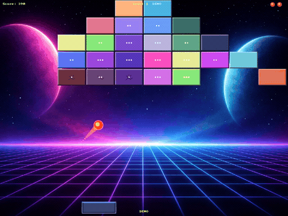
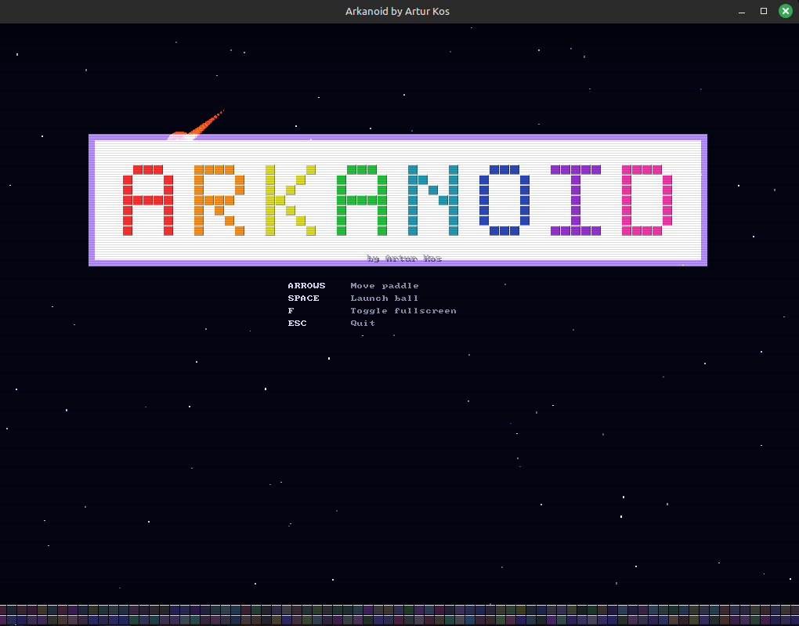
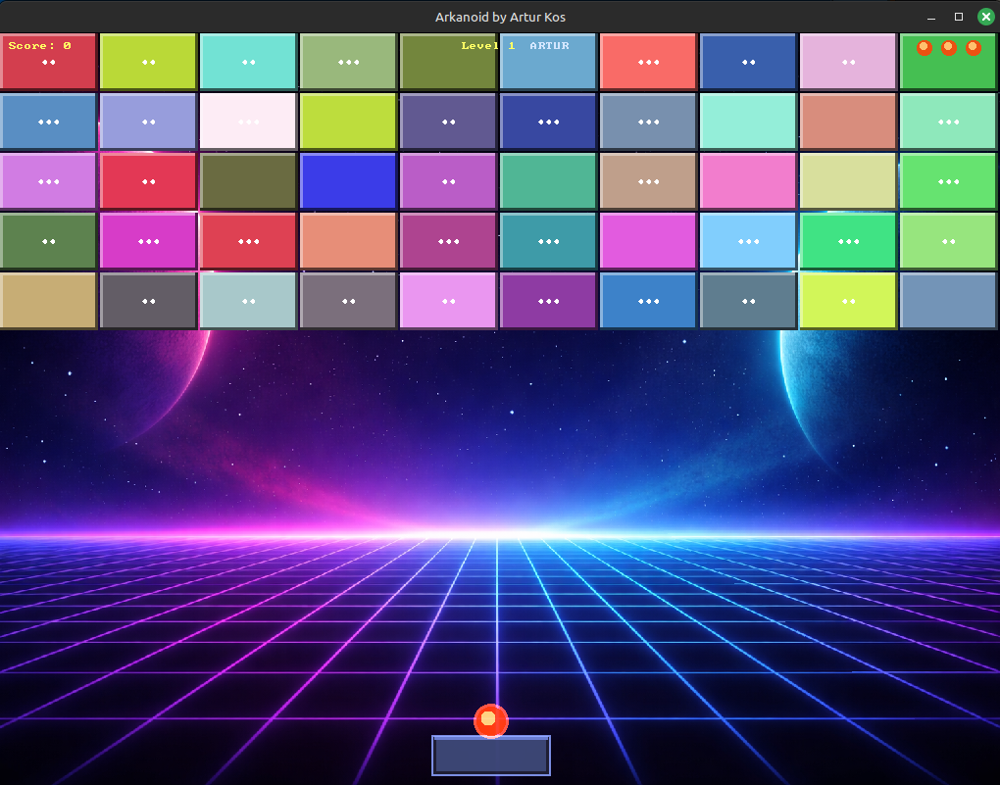
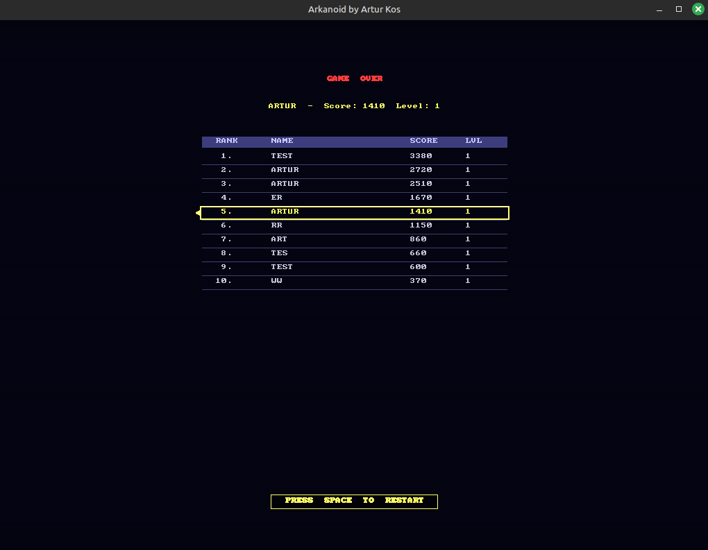
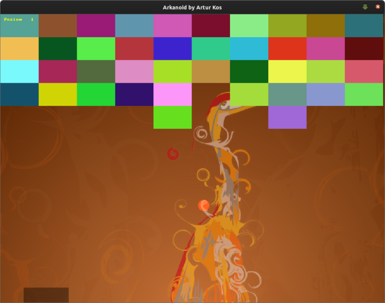

After a few seconds of inactivity on the intro screen (or when launched with
--demo), the game plays itself: the paddle auto-tracks the ball and
grabs falling power-ups.





A polished C++ implementation of the classic Arkanoid arcade game, built with Allegro 5 for graphics, audio, and input handling. The player controls a paddle to deflect a ball into a 10x5 grid of destructible tiles, each with an HP system requiring up to 3 hits to destroy. The game wraps the gameplay in a full retro experience: an animated CRT-styled intro screen, a name input prompt, level progression with hand-designed layouts loaded from files (falling back to randomized grids), five distinct power-ups, retro sound effects, particle effects, and a persistent top-10 high score table.
levels/NN.txt files at runtime, with a fallback to randomized grids once they run outscores.dat in binary format with animated row fade-in--demo) the game plays itself — the paddle auto-tracks the ball and collects falling power-upsA ready-to-run Flatpak bundle is published on GitHub. No build required — grab the latest release and install:
flatpak remote-add --user --if-not-exists flathub https://flathub.org/repo/flathub.flatpakrepo flatpak install --user arkanoid.flatpak flatpak run io.github.arturkos.Arkanoid
Requirements: CMake (3.2+), Allegro 5
git clone https://github.com/ArturKos/arkanoid.git cd arkanoid mkdir build && cd build cmake .. make
Check out the project on GitHub: Arkanoid Game on GitHub
Back to Portfolio